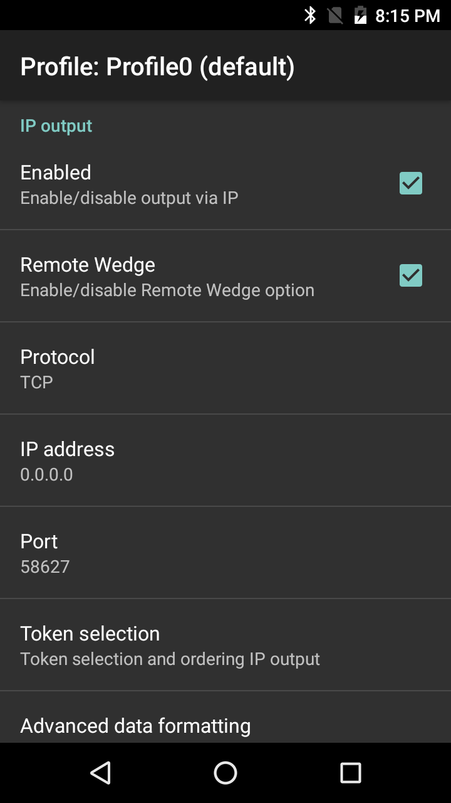

概述
IP 输出允许使用 TCP 或 UDP 传输协议将已捕获的数据发送到指定 IP 地址和端口。Zebra 建议接收机器正在运行 Windows 和 Zebra IPWedge 软件，但这不是必需的。
IPWedge 是一种小型 Windows 应用程序，它使用 DataWedge IP 输出选项监控网络端口和接收设备发送的已扫描数据。接收 PC 将数据作为按键插入到前台应用程序或 Windows 剪贴板，实质上是将设备用作无线扫描器。
前提条件
使用 IPWedge 需要满足以下要求：
- 带 Windows 和 .NET Framework 3.5（SP 1 或更高版本）的 PC
- 运行 Android 4.4 KitKat（或更高版本）的 Zebra 设备
- DataWedge for Android 1.5（或更高版本）
IP 输出设置
从要在其中激活 IP 输出的配置文件中：
1.找到配置文件的“IP 输出”部分。
2.选中“已启用”和“远程 Wedge”复选框以启用 IP 输出和与 IPWedge Windows 应用程序通信：
 IP 输出选项
3.选择数据传输所需的扫描协议（TCP 或 UDP）（默认=TCP）。
4.输入正在运行 IPWedge 的系统的 IP 地址。
5.如果端口号不是默认值 58627，则输入端口号。
UDI 数据输出
此设置适用于在条码读取器参数中将扫描模式设置为 UDI 的情况，如在上述参考部分选定通用设备标识符参数中指定的一样，此操作将获取多个数据点（令牌）。
仅在某些 Zebra 设备（最高 Android P [9.x 版]）上使用成像器时支持此功能：

令牌选择 - 允许调整已获取 UDI 数据的输出顺序，并可选择在令牌之间插入“制表符”、“换行符”或“回车符”字符（如果需要）。
要调整 UDI 令牌设置：
1.轻触“发送令牌”选择已获取 UDI 数据的所需输出。
仅令牌 - DataWedge 将 UDI 数据解析为单独令牌的进行输出（如果选择，则以分隔符字符进行分隔）。
条码和令牌 - DataWedge 发送由标记化数据附加的条码字符串。如果未选择分隔符字符（请参阅步骤 2），则 DataWedge 发送相同数据的两个实例。
2.如果需要，在令牌屏幕中轻触“令牌分隔符”以在令牌之间指定要插入的分隔符字符。如果选择“条码和令牌”模式，则还在两者之间插入选择的字符。 如果禁用“发送令牌”，则此设置不可用。
如果禁用“发送令牌”，则此设置不可用。
3.轻触“令牌顺序”以在输出中包括/排除令牌，并调整其输出顺序。 拖动令牌以调整输出顺序。
拖动令牌以调整输出顺序。
以编程方式配置 UDI 数据输出并检索配置：
多条码数据输出
此设置适用于在条码读取器参数中将扫描模式设置为“多条码”，此操作可同时获取在相应读取器参数中指定的条码数量 (2-10)。
注意：仅在选定设备上支持。有关详细信息，请参见“关于”页面。
要配置多条码输出：
1.轻触“数据格式化和排序”以指定要在每一条码的数据之间插入的分隔符字符。
2.轻触“条码分隔符”以指定所需插入字符（CR、LF 或 TAB）。
否则，每个条码中的数据作为按键的单一字符串进行级联和递送。
使用不带 IPWedge 的 IP 输出插件
要使用 IP 输出将获取的数据发送到未运行 IPWedge 的远程设备，位于接收端的系统必须正在运行客户端应用程序，该应用程序监控设备上指定的端口以获取通过 TCP 或 UDP 传送来的数据，如上所述。警告：Zebra 不支持此使用场景。
配置 IP 输出以将获取的数据发送到远程计算机或设备：
1.找到配置文件的“IP 输出”部分。
2.选中“已启用”复选框并取消选中“远程 Wedge”框。
3.选择数据传输所需的扫描协议（TCP 或 UDP）（默认=TCP）。
4.输入服务器或设备的 IP 地址以接收数据。
5.如果端口号不是默认值 58627，则输入端口号。
警告：Zebra 不支持此使用场景。
设置 IPWedge
1.在 Zebra 支持门户访问 IP Wedge for Windows 下载页面，接受 EULA 并下载。
注意：Windows Mobile/CE 设备可能需要 IPWedge 的不同版本。有关更多信息，请访问 Windows Mobile/CE 下载页面。
2.在要将已扫描数据发送到的系统上安装 .zip 文件。
3.运行 IPWedge 应用程序。将出现类似于下面图像的屏幕。记下 IP 地址和端口号（红色框中）。 IPWedge“系统托盘”菜单显示系统 IP 地址和监控的端口
IPWedge“系统托盘”菜单显示系统 IP 地址和监控的端口
注意：端口号必须与设备上 IP 输出中指定的一样。
4.从 Windows“开始”菜单打开 IPWedge 应用程序，或在“系统托盘”中单击 IPWedge 图标并从菜单中选择“选项”。
将显示类似于下面图像的 IPWedge“选项”面板。 常规选项
常规选项
 按键选项
按键选项
 剪贴板选项
剪贴板选项
5.在“常规”、“按键”和“剪贴板”选项卡中对“选项”做出任何所需更改。在每个选项卡上单击“确定”以保存设置。
PC 现已准备就绪，可从 DataWedge IP 输出（其 IP 地址和端口设置与 PC 的相匹配）接收数据。
配置
以编程方式配置 IP 输出并检索配置：
其他 DataWedge 输出选项：
相关指南：